Git的卸载与安装
文章目录
卸载
win
清理环境变量
右键我的电脑—>属性—>高级系统设置—>环境变量—>系统变量（或用户变量，取决于安装时的选项）—>Path—>编辑—>找到和 Git 相关的环境变量路径—>删除—>确定
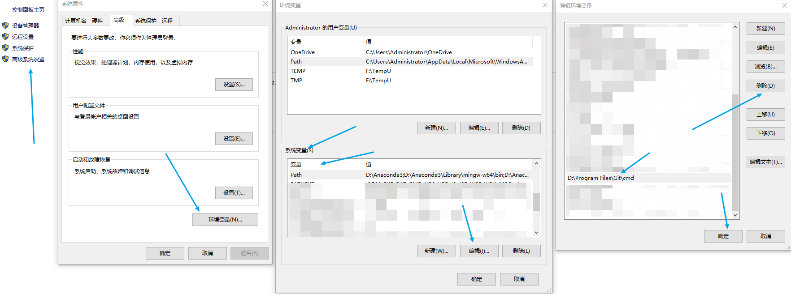
卸载 Git 软件
直接使用系统里的 程序和功能，或其他工具进行卸载即可。
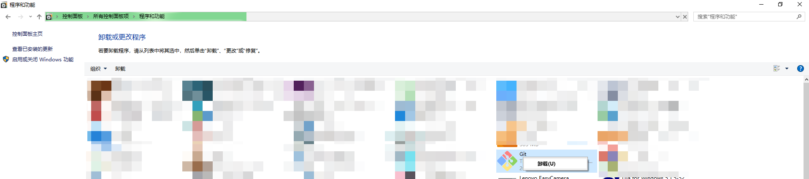
其他系统
待补充
安装
win
下载
从官网下载，Git官网：Git
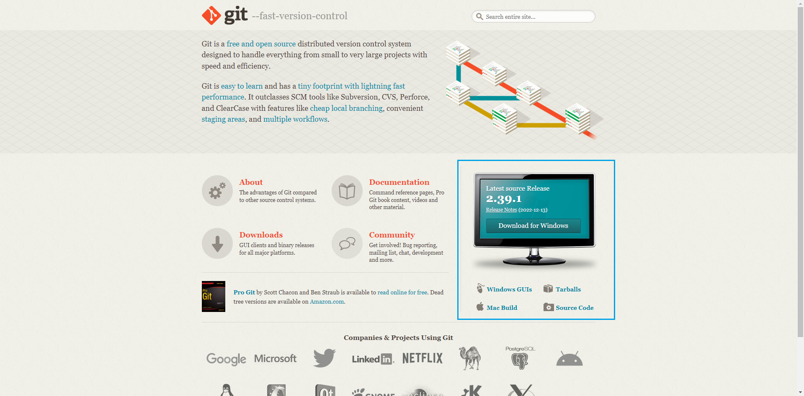
安装
1.运行安装程序，同意GUN协议，Next
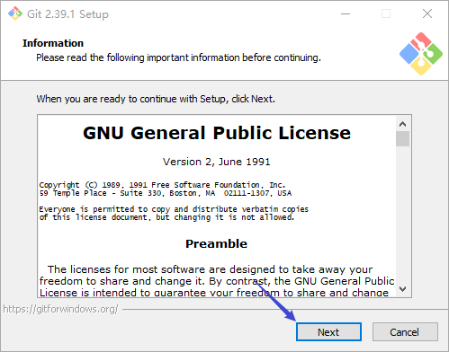
2.选择安装位置，Next（后面的可以直接无脑下一步）
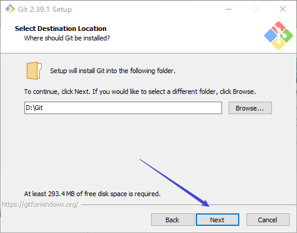
3.Git选项配置，默认设置即可，Next
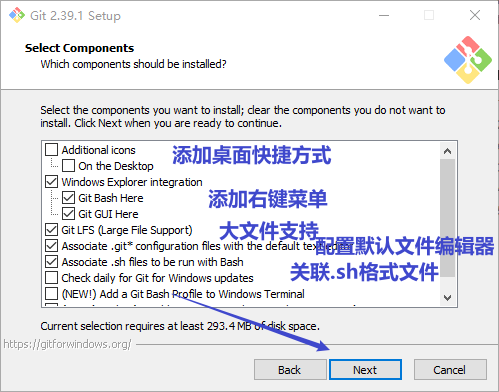
4.配置Git快捷方式路径，默认，Next
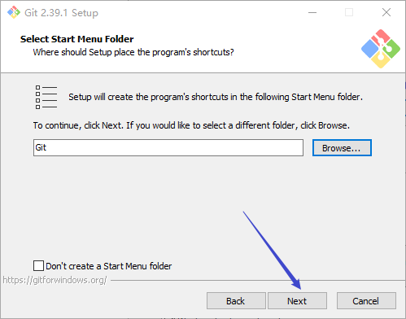
5.配置Git默认编辑器，看个人喜好选择，Next
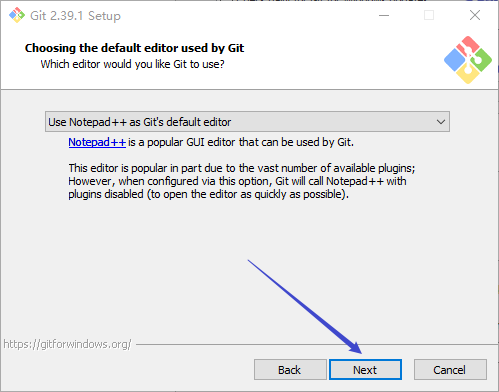
6.默认分支名设置，默认，Next
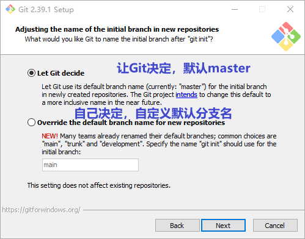
7.环境变量设置，默认，Next
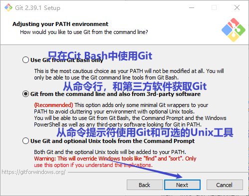
8.SSH可执行文件选择，默认，Next
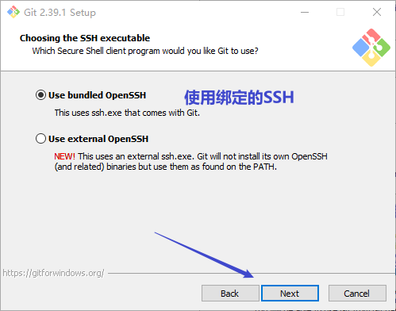
9.后台连接协议选择，默认，Next
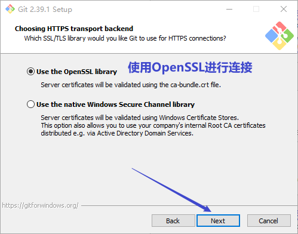
10.配置 Git 文件的行末换行符，默认，Next
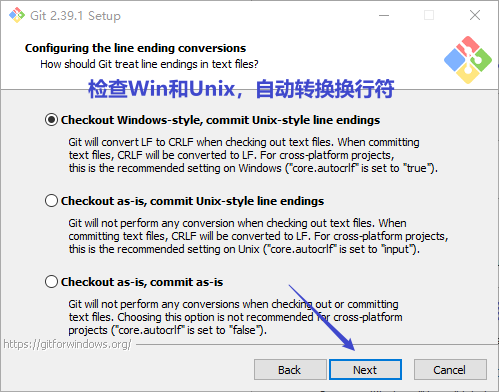
11.选择 Git 终端类型，默认，Next
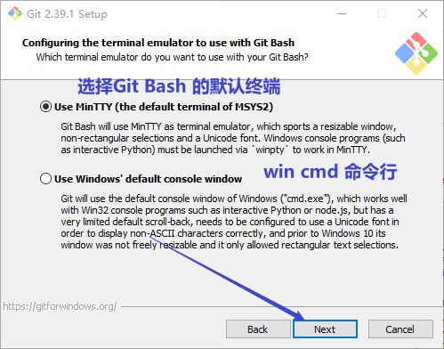
12.选择合并模式，默认，Next
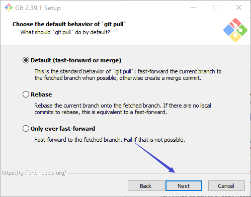
13.选择 Git 的凭据管理器，默认，Next
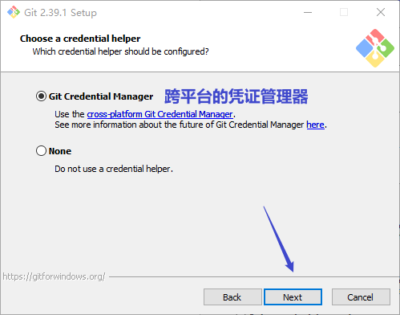
14.其他设置，默认，Next
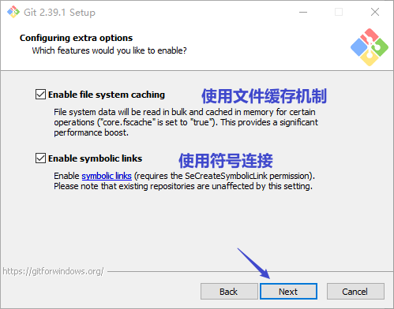
15.实验室功能，默认，Install
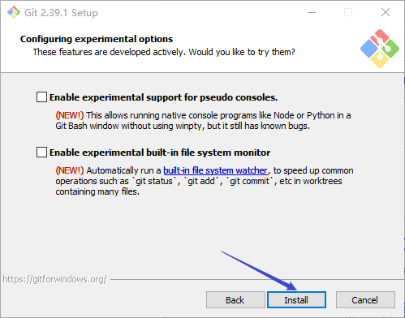
16.安装完成，Finish
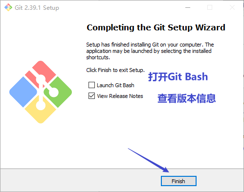
验证
右键桌面空白处，你会发现右键菜单多了两个选项
右键打开Git Bash，输入git -v
其他系统
待补充
文章作者 Pure3417
上次更新 2023-01-25